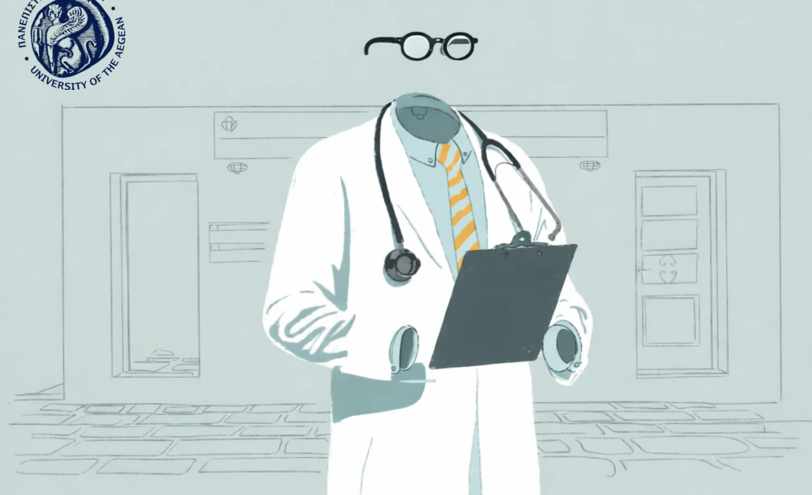
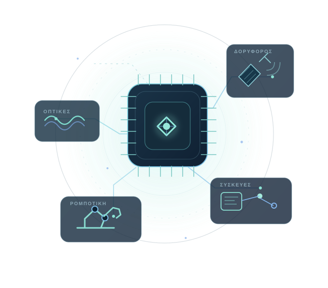
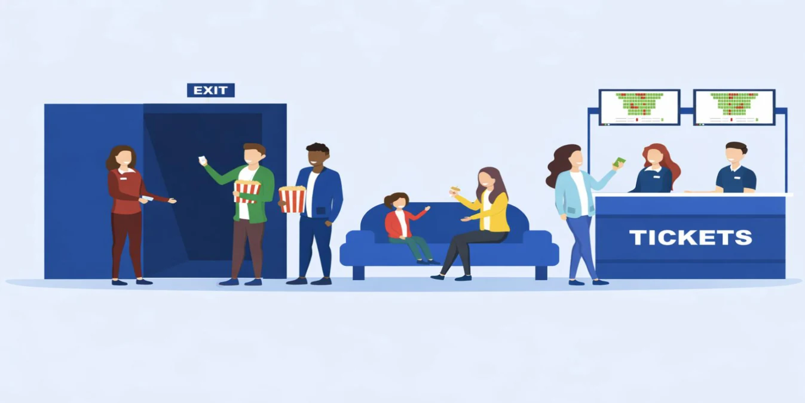
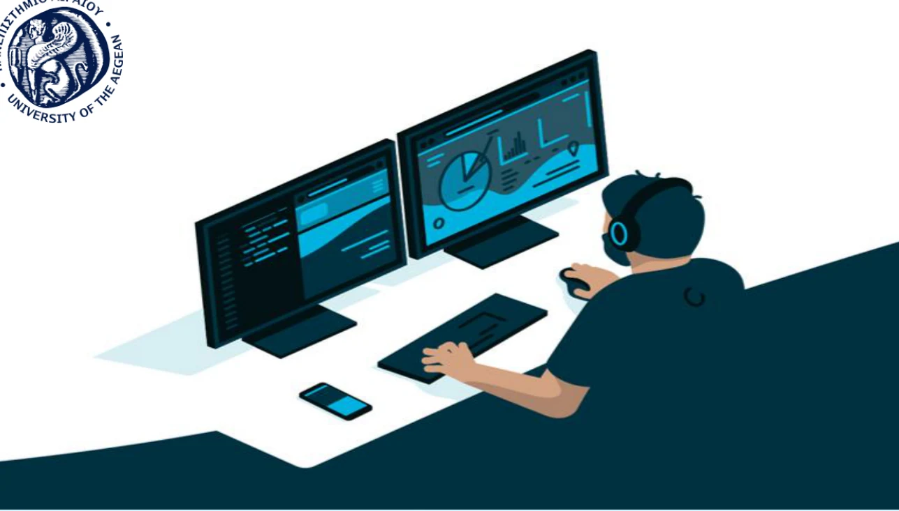
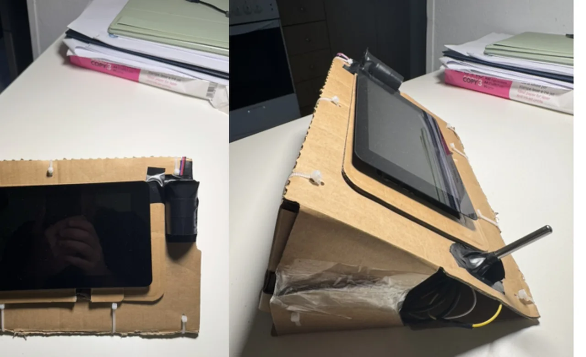

Προηγμένη Ρομποτική01
Αυτόνομο Health Kiosk
Αναβάθμιση σταθμού μέτρησης ζωτικών λειτουργιών με Raspberry Pi 4, αισθητήρες, Computer Vision, τοπική βάση δεδομένων και μοντέλο AI μέσω Ollama.
ΠΛΗΡΟΦΟΡΙΚΗ · ΕΠΙΚΟΙΝΩΝΙΕΣ · ΤΕΧΝΟΛΟΓΙΑ
Φοιτητής Μηχανικός Πληροφοριακών & Επικοινωνιακών Συστημάτων
Με ενδιαφέρει να συνδυάζω τη θεωρία με την πράξη, δημιουργώντας εφαρμογές λογισμικού και ρομποτικά συστήματα και εξερευνώντας την τεχνητή νοημοσύνη και τις σύγχρονες επικοινωνίες.

Τεχνητή νοημοσύνη · Ρομποτική · Επικοινωνίες01 / ΕΠΙΛΕΓΜΕΝΑ ΕΡΓΑ
Έξι πανεπιστημιακές εργασίες με αναφορές PDF, βίντεο και παρουσίαση.
Εμφανίζονται 6 από 6 έργα

Αναβάθμιση σταθμού μέτρησης ζωτικών λειτουργιών με Raspberry Pi 4, αισθητήρες, Computer Vision, τοπική βάση δεδομένων και μοντέλο AI μέσω Ollama.

Πληροφοριακό σύστημα για την οργάνωση κινηματογραφικών προγραμμάτων και προβολών, με ρόλους χρηστών και REST API.

Διαδικτυακή εφαρμογή για πελάτες και προσωπικό συνεργείου, με διαχείριση οχημάτων, ραντεβού και δικαιωμάτων πρόσβασης.
Σχεδιασμός σχεσιακής βάσης και βάσης γραφοδεδομένων για ασθενείς, γιατρούς, ραντεβού, εξετάσεις και υπηρεσίες υγείας.

Κατασκευή εκπαιδευτικού σταθμού με Raspberry Pi, οθόνη αφής και αισθητήρες για θερμοκρασία σώματος, καρδιακούς παλμούς και SpO₂.
Πανεπιστημιακή εργασία στην ψηφιακή καινοτομία και την επιχειρηματικότητα, διαθέσιμη ως παρουσίαση PowerPoint.
Δοκίμασε διαφορετική λέξη ή άλλαξε κατηγορία.
Οι αναφορές ανοίγουν σε νέα καρτέλα. Ορισμένα έργα πραγματοποιήθηκαν σε συνεργασία με μέλη των αντίστοιχων πανεπιστημιακών ομάδων.
02 / ΕΠΑΓΓΕΛΜΑΤΙΚΗ ΕΜΠΕΙΡΙΑ
Στην πρακτική μου ασχολήθηκα με την ανάπτυξη ψηφιακών εργαλείων για τις ανάγκες πολιτών και εργαζομένων, καθώς και με τεχνικές παρεμβάσεις σε πραγματικό περιβάλλον υπηρεσιών υγείας.
Εφαρμογή για την ιστοσελίδα του νοσοκομείου, με πληροφορίες για υπηρεσίες, κλινικές, εφημερίες, ραντεβού και συχνές ερωτήσεις, με διαχείριση περιεχομένου μέσω WordPress.
Οργάνωση καθημερινών διαδικασιών σε σύντομες, αναζητήσιμες οδηγίες βήμα προς βήμα για τους εργαζομένους.
Πρωτότυπο καταγραφής ζωτικών σημείων, μελέτη βελτίωσης της διαδικασίας ακτινολογικών εξετάσεων και τεχνική τεκμηρίωση προβλημάτων.
03 / ΛΙΓΑ ΛΟΓΙΑ ΓΙΑ ΕΜΕΝΑ
Οι σπουδές μου συνδυάζουν την πληροφορική με τις επικοινωνίες. Μέσα από μαθήματα, κατασκευές και εφαρμογές εξερευνώ πώς οι διαφορετικές τεχνολογίες μπορούν να συνεργαστούν για χρήσιμες λύσεις.
04 / ΕΠΙΚΟΙΝΩΝΙΑ
Για κάποια εργασία, ιδέα ή δυνατότητα συνεργασίας, μπορείς να επικοινωνήσεις μαζί μου.